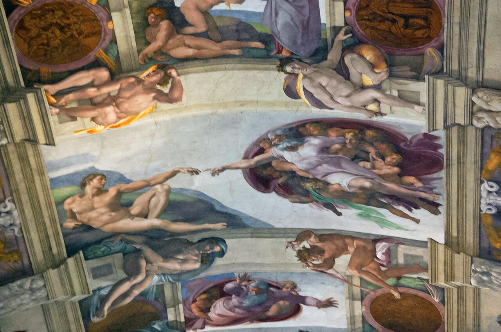

별이 쏟아지는 밤하늘, 거대한 폭포 앞, 아기의 첫 웃음 — 우리는 모두 말을 잃는 순간을 압니다. 이 감정을 영어로 awe(경외)라 부릅니다. 심리학자들이 최근 주목하는 — 가장 인간적인 감정입니다.
Keltner · Haidt (2003)의 정의 — 경외는 "압도적으로 크거나 새로운 것을 만났을 때, 나의 틀이 한 번 무너지고 다시 짜이는 경험"입니다. 이 순간엔 — 말·숫자·분류가 멈춥니다. 좌뇌가 잠시 쉬고, 우뇌가 세상을 한 덩어리로 받아들입니다.

미켈란젤로 · 〈아담의 창조〉 1512